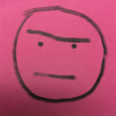
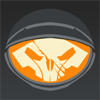

UnremarkableUsername - Karsk
29-Feb-20 07:18 PM
[6/12 AR] OPEN RP - solar orbit between Mars and Ceres
~ ~ ~ ~ ~ ~ ~ ~ ~ ~ ~ ~ ~ ~ ~ ~ ~ ~ ~ ~ ~ ~ ~ ~
Hello Drusus,
I am Cephalon Karsk. I have been looking through the Leverian lately, and although I must admit your collection is imressive, I have noticed several trends that I find problematic. Relatedly, as one who is has led a long and adventurous life, I have some stories to tell which may be of interest to you.
I notice that your approach to history is centered around the great and powerful, in other words, around the Tenno and Orokin. You draw your information from archaeology and inspiration from legend. You portray the Tenno either as beneficient, godly heroes, or as obedient champions of the Orokin.
My approach to history is based on people, on everyday occurences. I draw my information and inspiration from what is happening around me. I know that the Tenno are niether godly, nor heroes, nor obedient, nor champions. You concern yourself with giants, but forget the worms that they step on.
The story of the Vermiculus is one of many that the Leverian has missed, and which I hope will encourage you to take a more nuanced view of this system's history, and the people who live in it.
((1/3))
(edited)
There was little unusual about the Vermiculus, it was a Grineer galleon like any other. On its way to Ceres for decomissioning after many eventful years of service in Vay Hek's fleet, the final crew of the Vermiculus had an unexpected spark of luck. It intercepted a Solari rail tractor carrying a shipment of assorted proxies from production facilities on Pluto, intended for deployment on the Orb Vallis. This great windfall was reported to Grineer command, and a Nightwatch squad was sent to secure this trove of forbidden technology and potentially valuable intelligence. At that point, luck ran out.
The Nightwatch squad arrived to find the Vermiculus dark. Its engines and communications were silent. Upon entering, they found the crew dead, many of them spead across the walls and some even dripping from the ceiling, their remains beginning to freeze as the broken reactor bled its heat into space and its coolant into the ship. Meanwhile, the unseen enemy had stupidly left their landing craft docked to the other end of a shipful of doors that, without power, could only be opened manually.
How do I know this? My proxy was stowed away among the Moas on that rail tractor. I saw the whole thing.
I heard when the rail jockey began to beat out an ancient call for help on the wall of her abandoned holding cell, hoping that someone might hear, and perhaps that someone might even recognize it.
TAP TAP TAP
SCRAPE, SCRAPE, SCRAPE
TAP TAP TAP
TAP TAP TAP
SCRAPE, SCRAPE, SCRAPE
TAP TAP TAP
The Tenno heard.
~ ~ ~ ~ ~ ~ ~ ~ ~ ~ ~ ~ ~ ~ ~ ~ ~ ~ ~ ~ ~ ~ ~ ~
((2/3))
(edited)
((Hello and welcome to the Vermiculus!
If you join as a Tenno, you are on what was until now a normal sabotage/exterminate mission, run by a standard squad of four.
If you join as a member of the Nightwatch, please be aware that your character will definitely might possibly die.
Don't kill Esk please.
My only rp experience so far is in #fortuna-hub-ar, so we'll see how this goes.  ))
((3/3))
(edited)
))
((3/3))
(edited)
))
((3/3))
(edited)
UnremarkableUsername - Karsk
06-Mar-20 04:47 PM
Esku Kterst:
"You done there? got anything?"
The voice made the Bombard jump slightly. She turned away from the dim yellow glow of the console toward the armored bulk of a Nightwatch reaver, the squad leader.
"Nothing we couldn't tell from the ouside, sir," she answered. "The reactor's broke and the CO2 scrubbers and ventilation is down. The cargo seems to be safe, but we have only an hour until the emergency batteries run out."
The squad leader nodded his acknowledgement. Today was definitely shaping up to be a bad day, but perhaps the situation could be salvaged.
"We proceed," he said, as he began to turn the crank wheel to open the door to the next room. "Our goal is the cargo bay. Stay close together. Radio silence unless absolutely necessary. Tenno may still be here. And someone help with this door!"
Esk concealed a gulp as the door opened, the squad collectively readying their weapons in case the door concealed a Tenno. Nothing moving in the next room, just more corpses. Safe. With a nod, the squad leader crossed the threshold, tonkor ready, followed by a few brunt lancers, a few flameblades and powerclaws, the main group of lancers, a pair of seekers, a hyekka master, and at the rear with a bailiff and a few more brunt lancers, Esk, the bombard. Somewhere in the vents, there was a manic scouting ahead.
(edited)

DoubleDamages - Kha'dra Rham
10-Mar-20 09:30 AM
Gli’Vun Korr
Finally, the Vermiculus. The name was not familiar to Gli’Vun, intel’ only indicated it was one of the many Galleons that made up Vay Hek’s infamous fleet. Their objective was the recovery of valuables Corpus proxies, a routine job by the look of it. Boring, that was the only word that went through her mind. She would have rather taken part in a Rathuum Trial then playing fetch for the Queens.
But everything changed when they arrived on-board. It was a ghost ship, or what was left of it. There was blood and corpses everywhere while the reactor coolant was leaking through the ship. They picked up an unknown signature at the end of the ship’s, a landing craft. Probably whoever attacked the galleon to begin with. Finally a change of pace for her, but probably not exactly what she had in mind.
The Hyekka Mistress was silently following the main bulk of her Nightwatch squad. Positioned in the middle section of their unit’s column formation it was the perfect spot to prevent her soon-to-be death at the hands of an unknown assailant.
Both her tamed Hyekkas, Ogsk and Karsk, were gently and silently strolling alongside their master. Each was equipped with some kind of grineer-manufactured collar, courtesy of Gli’Vun herself. They were designed to enhance reaction response time and to assure their blind loyalty, a cruel method but a necessary evil. Korr had a sadistic reputation to uphold and both her "pets" would suffer from her egotistical approach to battle.
Something was off. Whatever happened aboard this ship ... It was far from over.
Almighty_Jado - Kapak
17-Mar-20 01:30 PM
Kapak:
Somewhere within the ventilation tubes of the galleon, a wet crunching noise resonated. The source was Kapak, whose Nidus feasted upon the lifeless shell of a lancer. The Grineer's armour was pried open, like a fruit revealing its juicy innards to a hungry animal.
Kapak's mutant jaws tore what organic matter remained inside out, swallowing the pieces of flesh whole. Delicious. But satisfying? That was another question.
No matter what Kapak consumed, it would never fill the void in his soul. The Grineer had taken the closest thing to a family he had. Kuve. Kino. Disruptis. Muro. Vuko. Mata. Names upon names and faces upon faces scrolled through his mind, haunting him. With every memory, his rage and sadness continued to flood back to him, and he savaged the corpse with ever increasing brutality.
These emotions were new to him. Never had he been so attached to people in this way. This weakness in his soul only fueled his hatred even more. He knew he could dismember oceans of Grineer clones, and it would never amount to even a fraction of the justice they deserved.
((Leaving my post off here in case other Tenno join. Typically Kapak doesn't work with other Tenno he doesn't know well because he's got a massive bounty on him, so we'll figure that out if that bridge gets crossed.))
UnremarkableUsername - Karsk
14-Apr-20 07:07 PM
((@Kapak @DoubleDamages - Kha'dra Rham Here we go!))
As the squad entered the next room, a tap from the vent in an air duct announced the return of the scout.
"Nearby, in ducts, something big. Smell Infested, sound like eating Grineer. Farther, hear survivor. They signal: three taps, three scratch, three taps again. Risk investigate?"
The Squad Leader answered with the quick confidence of someone who knew exactly what they were doing. "No. Leave the survivor, they're not Grineer. Gli'vun, watch for Infested."
Apparently this Squad leader was a sharp fellow, which, for an experienced officer in the most elite division under the Queens, doesn't surprise me. He knew that few Grineer would be taught a coded call for help, especially one so ancient, and even fewer would bother to use it. After all, they're supposed to be expendable. It wouldn't surprise me if he even recognized it as SOS.
I'd love to make fun of him for his confidence, putting one soldier with a flamethrower and a few hyekkas in charge of dealing with an angry Nidus, but I can't. He probably thought the Infested thing in the vents was a brood mother or something like that. His response makes complete sense given what he knew at the time, and if he was right, the Nightwatch would probably have completed their mission with few or no casualties, and I wouldn't have a story to tell you.
Whether our friend in the vents recognized the SOS, I'm not sure, but he certainly heard it.
DoubleDamages - Kha'dra Rham
25-Apr-20 03:05 PM
Gli’Vun Korr
And that was her cue. With a silent smirk under her hood, she activated her head’s up display, and the special sensors that came with it. A few taps on a wrist-mounted grineer terminal and the onboard sensors located into her Hyekkas collars began to cycle through the surrounding area aswell. Sure, theses beasts were naturally good at hunting and feeding of infested creatures, but an extra-effort couldn’t hurt, right ?
A few seconds went by, nothing yet on the nearby sonar pings, good enough. She checked her current ammunition with a slight glimpse at her waist. Four additional canisters for her Ignis handheld flamethrower were gently attached to a tactical belt, alongside a Sheev combat blade. It was probably good enough for whatever was left aboard this wreck. Probably.
She signaled the squad leader that they were in the clear for now and that she was doing, well, whatever she was tasked to do to begin with.
It was up to Ogsk and Karsk, for now.
{kind=link}
{kind=link}